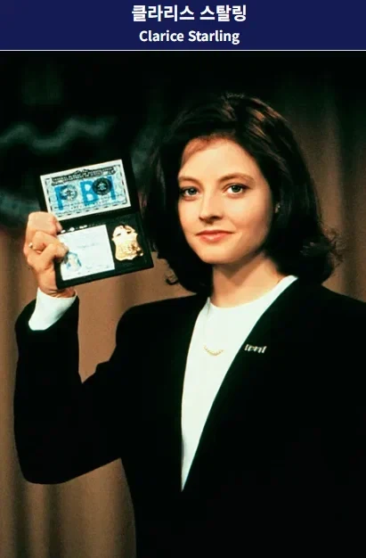

영화와 원작에서 한니발 렉터와의 라이벌 기믹을 담당하는 여자 주인공 수사관
1. 영화판에서는 렉터에게 붙잡혀 약물 고문과 세뇌를 당하지만 렉터에게 굴하지 않고 끝까지 맞서서 격투를 벌이다가 렉터가 런하게 만듦
2. 원작 소설에서는 렉터에게 붙잡힌 뒤, 계속되는 세상의 억까에 지친 나머지 렉터가 주는 약물을 반쯤 자의로 받아 먹고 세뇌를 당한뒤 타락하여 렉터의 추종자가 되어버림.
+ 렉터가 마지막 관문으로 여주인공을 괴롭히던 존나 억까하던 상사를 잡아다가 전두엽 요리를 해와서 먹으라 했는데, 기꺼이 맛있게 먹고 한니발 렉터와 연인이 되며 방점을 찍음.
저런 내용 때문에 클라리스 배우가 거절하고 다른 사람으로 교체 된 거라고 하는데
사실 영화에서는 렉터가 중년이 아니고 노년으로 나와서, 원작 그대로 갔으면 엄...
어느정도 나이 차이나는 연상 연하 수준이 아니고 거진 폭삭 늙은 할아버지랑 한창때인 창창한 젊은이가
존나 떡치고 키스하고 물고 빨고 해대는 커플이 되는거라 (한니발 찌찌 클라리스가 깨무니까 느끼는 장면까지 나옴) 좀 많이 괴상하긴 했을듯
레드드래곤